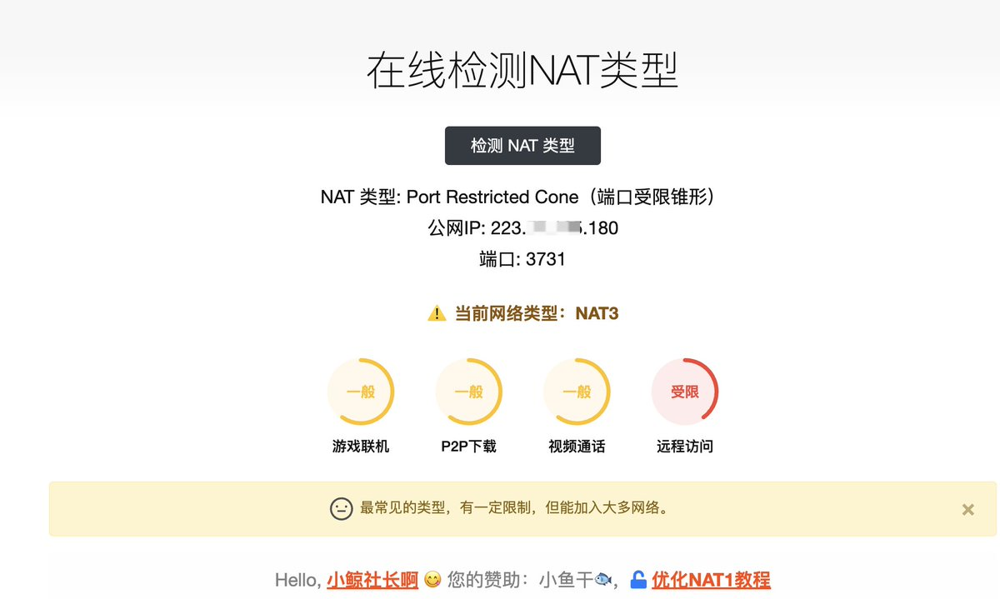
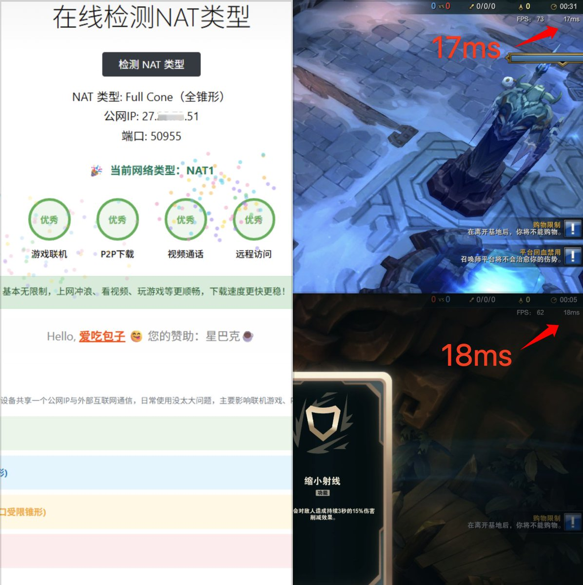
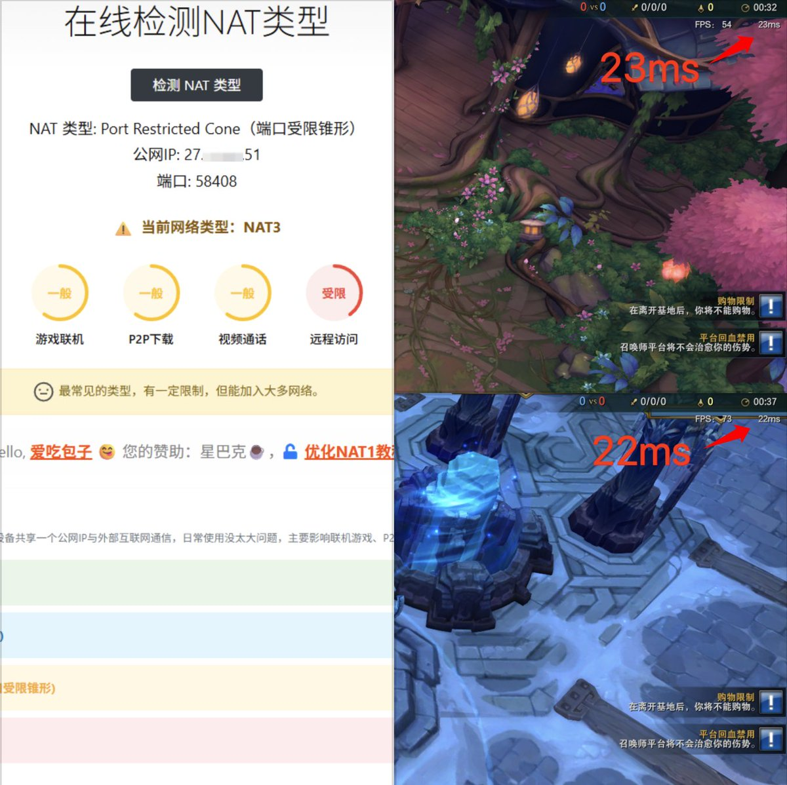

奶昔🥤
@realNyarime
@xiaojingshe 这样吧，我给你个建议～不要NAT直接一根网线直通光猫，改成桥接拨号上网🤓
你专门拉条宽带打游戏，电信国服，日韩联通，港区东南亚走移动，甚至有些发达地区还有万兆、游戏宽带，加速器直接去他妈～
我一条千兆宽带下游戏就够了，有钱的话，当我没说。家住北京全万兆，全屋直接干光纤，避免干扰



小鲸社长
@xiaojingshe
这几天沉迷于海克斯大乱斗，每天都要玩个10几把，发现NAT类型对游戏延迟有巨大影响：
1、NAT1模式下，延迟17到18ms
2、NAT3模式下，延迟22到23ms
据说Faker能感觉到5ms的差异，对于普通玩家来说虽然但是...延迟还是越低越好啊，起码咱看的舒服，输了也没借口🥲 https://t.co/Ir9e8EIAVh